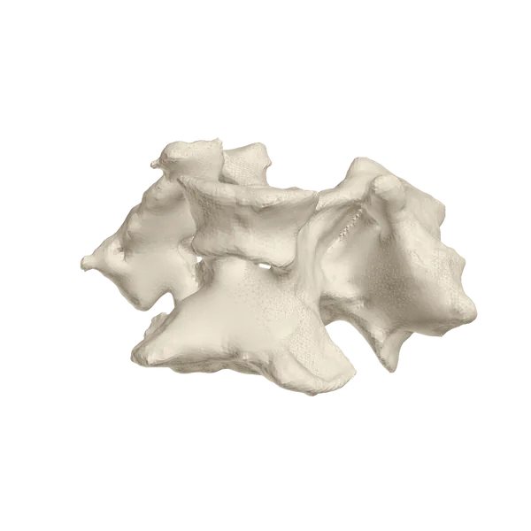

Versión de prueba de la interfaz: el resultado es un ejemplo grabado, no se compara tu archivo.
Osteología de aves
Subí el modelo 3D de una vértebra y comparalo con una colección de referencia escaneada en museos.

Tres pasos, sin instalar nada
Un archivo PLY, OBJ o STL de una sola vértebra, en milímetros.
Se alinea contra las vértebras de la colección y se mide cuánto difieren las superficies.
Especie y posición más parecidas, con la vértebra de referencia que más se acerca.
En desarrollo: los resultados son orientativos mientras crece la colección.
Comparamos tu pieza con la colección de referencia.
Resultado
Arrastrá para girar, pellizcá o usá la rueda para acercar.
La probabilidad es relativa entre las candidatas: sirve para ordenarlas, todavía no es un porcentaje de confianza.
La diferencia media es la distancia promedio entre las dos superficies después de alinearlas. Menor es más parecido.
Comparando con la colección…